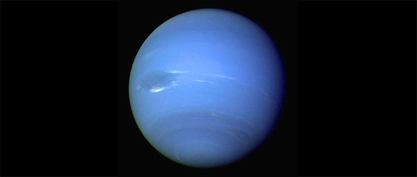

Neptune
Huitième planète à partir du Soleil, Neptune boucle son orbite presque circulaire en 1 648 ans à une distance moyenne du Soleil de 4 496 000 000 km. C'est une géante gazeuse dont le diamètre équatorial mesure 49 500 km et dont la période de rotation est de 16 h 03 mn.
Jusqu'en 1989, Neptune n'était visible qu'au télescope sous la forme d'un disque bleu-vert, mais la sonde Voyager 2 envoyée cette année-la a permis de la connaître mieux. Comme les autres géantes gazeuses, Neptune possède un noyau rocheux entouré d'une atmosphère dense faite d'hydrogène, d'hélium et de méthane. On sait maintenant que cette atmosphère est agitée et parcourue de raies brillantes ou sombres révélant une intense activité avec une vaste zone (semblable à le grande tache rouge de Jupiter) appelée la grande tache noire. Des bancs parallèles de nuages argentés ont été détectés a 50 km au-dessus de la couche supérieure. Neptune possède quatre anneaux équatoriaux étroits. Un puissant télescope les avait révélés sous forme d'arcs brisés (des anneaux incomplets auraient constitué un cas unique) mais on sait maintenant qu'il s'agit d'anneaux continus rassemblant poussières et particules avec quelques zones plus denses et plus réfléchissantes que d'autres.

Source : Wikipédia
Satellites de Neptune
On connaît à l'heure actuelle treize satellites gravitant autour de Neptune. Le plus grand, Triton, est une planète naine. Il a été découvert par William Lassell le 10 octobre 1846, soit à peine deux semaines après la découverte de Neptune.
Les autres satellites sont de petits corps aux formes plus ou moins irrégulières. Seuls Protée, Néréïde et Larissa dépassent la centaine de kilomètres de rayon moyen. Larissa vient ensuite par ordre de taille. Tous ces objets apparaissent couverts de cratères. Certains sont peut-être les fragments d'un satellite détruit, dans le passé, par une collision avec un gros météorite. C'est en tout cas l'hypothèse la plus souvent avancée dans le cas du plus externe d'entre eux, Néréïde, découvert en 1949 à Fort Davis par G. Kuiper.
Plan du site | Contact | Site réalisé par Mathieu Morainville.